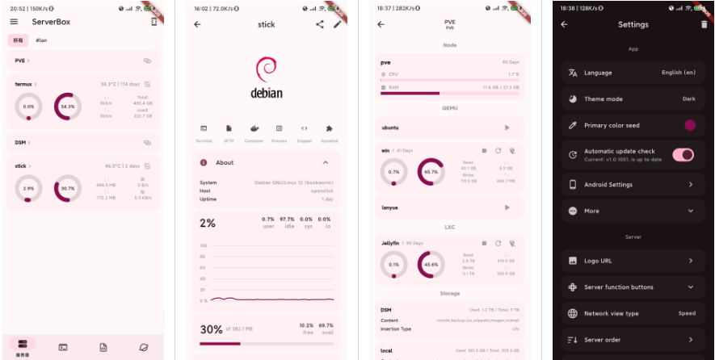
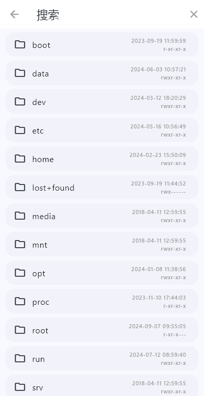

ServerBox 这几年是怎么长大的：从 SSH 玩具到运维工作台
ServerBox 现在能做的事情——SFTP 双栏、推送通知、Docker 管理——回头看其实每一步都踩得挺稳。从一个简单的 SSH 客户端，它用了几个版本才长成今天的样子。
现状：它现在是什么样
打开 ServerBox 最新版本，第一眼是服务器列表卡片，每台机器的 CPU、内存、磁盘用条形图实时挂在上面。点进去能看进程管理、SFTP 文件浏览、Docker 容器日志，手机不在跟前的时候还有 ServerBoxMonitor 主动推送告警。桌面版和移动端长得不一样但数据互通，生物识别解锁帮我省了每次输密码的麻烦。
说起来，三年前第一次装ServerBox官网上的这个东西的时候，它还只是个能连 SSH 的小玩具。谁能想到它会走到今天这一步。

来路：从 SSH 壳到工作台的几步关键棋
样本文档没提具体的版本号迭代表——这本身就挺有意思，说明作者不把 changelog 当主要叙事线。但从功能的成熟度反推，几个关键转折点还是能看出来的。
起步阶段（V1.x）：能连上就好。
最初的 ServerBox 就是一个跨平台 SSH 客户端，支持多端登录、密钥认证、基本的终端会话。这阶段的目标很朴素——手机上临时连一下服务器跑个命令，比掏笔记本方便。没有 SFTP，没有监控，没有 Docker，就是纯终端。很多人这时候可能把它当 Termius 的便宜替代品在用。
V2.x：文件管理补进来了。
这是第一个让我觉得它认真做的信号——SFTP 文件浏览器。不是那种简陋的文件列表，而是双栏布局：左边远程、右边本地，桌面版并排显示，移动端可以切换。面包屑导航、快速跳转按钮、收藏常用目录，这些细节放出来的时候，竞品要么加钱要么没有。ServerBox 的设计思路从"SSH 外壳"悄悄转向了"运维场景覆盖"。

V3.x 前后：主动推送和 Docker。
ServerBoxMonitor 是这个阶段最有代表性的动作。之前 ServerBox 一直是"客户端拉取"模式——不开 App 就什么都不知道。Monitor 组件把这个逻辑翻了过来：Go 编译的单文件二进制扔服务器上跑，10~20MB 内存占着，CPU 超过阈值手机立刻弹通知，具体阈值和推送配置去ServerBox文档翻。配合主屏小组件，形成了手动巡检 + 主动推送 + 后台刷新三件套。
Docker 容器管理也是这阶段补的——容器状态、日志、终端进入，从 SSH 手工敲 docker ps 变成卡片式管理。这一步意味着 ServerBox 的定位从"连得上服务器"变成了"帮你管着服务器"。
最近几个版本：安全和分发体系。
生物识别解锁（Face ID、指纹、macOS Touch ID）跨端铺开，应用锁定机制细到"切后台 30 秒后自动锁定"这种粒度。安装包从ServerBox下载拿最直接，下载渠道也从单纯的 GitHub Releases 扩展到了 F-Droid——对开源社区是个明确信号。分发不再是技术问题，而是生态问题。
规律：他们一直在死磕什么
回顾这些步骤，一个很清晰的模式浮出来了。
优先级一：跨平台一致性。
每加一个功能，几乎同步就要覆盖 iOS、Android、macOS、Windows、Linux。样本文档里 SFTP 写了"桌面版并排、移动端切换"，生物识别表格列了五个平台的对应方案——不是敷衍的"移动端适配"，是真的不同平台有不同交互策略。这在同类工具里挺少见，大多数竞品要么主打桌面端要么主打移动端。
优先级二：不造轮子但贴得紧。
ServerBoxMonitor 不是自己写守护进程——用的就是标准 top / free / df 命令。SFTP 不额外开端口，复用 SSH 连接。推送走 Webhook，部署用 systemd。团队的思路是：系统已经有的东西不重写，但把体验层做厚。这是很务实的工程取舍。
一直没碰的东西：
样本文档没提团队协作、云端同步、多用户权限。目前所有服务器配置都存在本地。这意味着 ServerBox 从始至终是"我的服务器我的管"的个人工具定位，没有往团队版方向走。有人觉得这是不够，有人觉得这是克制——至少到 V4 之前，他们没动这块。
预判：按这个节奏下一步是什么
这部分是从迭代规律推的，不是官方信息。
最可能的：配置同步。
现在最烦的事是新设备要重新扫一遍服务器密钥。团队既然死磕跨平台一致性，这块纸糊的缺口迟早要补。但他们不会自己搞云同步服务——大概率走 encrypted export/import 或者接 Dropbox、iCloud 的文件同步通道，继续贴系统轮子。
有可能的：命令片段库。
样本文档提了 Docker 日志查看、SFTP 拖拽上传，都是高频场景。下一步可能把常用命令（比如 nginx -t、journalctl -u xxx）做成可收藏的命令片段，一键执行。这和他们现在的"薄平台厚体验"思路一致。
大概率不会的：团队协作。
这个就不提了——从目录结构到权限设计，全是单人使用模式，突然转向会推翻已有架构。除非有明确的付费化信号，否则这块是禁区。
小结
ServerBox 这几年的成长不是那种大跃进来的，是每个版本往"运维日常"这块拼图上多放一块——先把 SSH 连上，再把文件拖进去，再帮你盯着告警，再帮你管容器。没有花哨的功能发布会，改的全是日常会碰到的痛点。
你要说它有多惊艳？也谈不上。但手机上 SSH 连进去看一眼、SFTP 拖个配置文件过去、CPU 过载了手机弹个通知——这一套组合拳现在让我离不开它。很多工具能单点做好一件事，能把这几件事在五六个平台上同时做好的，不多。
ServerBox 的资料维护分散在三个仓库，GitHub 是主源，国内网络不稳的时候可以去 Gitee 或 GitCode 的镜像。